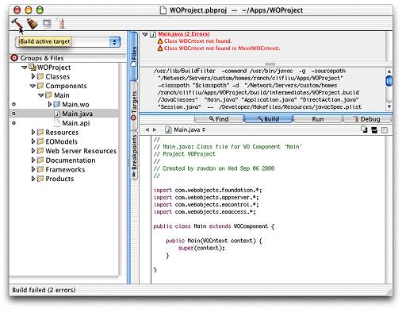

| PATH |

As its name implies, Project Builder manages all of the constituent parts of your application, including source code files, WebObjects components, frameworks, makefiles, graphics and sound files, and the like. You use Project Builder to edit your code files, compile, debug, and launch your application for development testing. Project Builder's assistant helps you create new WebObjects components. You also can launch the other development tools from within Project Builder.
Figure 4-4 shows Project Builder in use.
Figure 4-4 Project Builder
